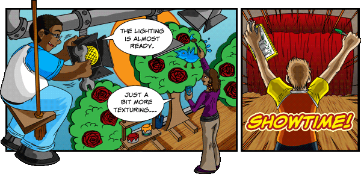
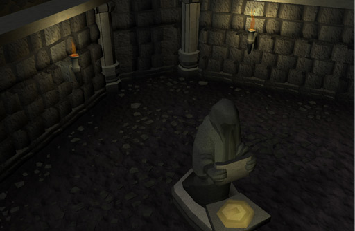
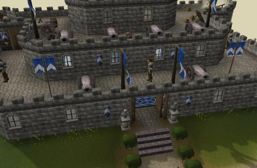
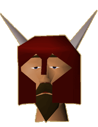

")
A New Look RuneScape: Part 2

A New Look RuneScape: Part 2
The first part of this Development Diary covered a brief history of the new detail mode project and a few of the features it brings – namely, textures, shadows, texture blending and fog. This concluding part will cover the remaining graphical effects: lighting, water, fullscreen and some other, related projects.
Lighting the way
Currently, the lights in the game – torches, lanterns, fires, etc – are just animations that don't affect the surrounding area's light levels. “In the current detail modes, no matter where you are, the lighting is always the same and, as an artist, that's a real limitation,” says Mod Farley of Graphics. We wanted lights that actually illuminate their surroundings.
Mod Nick, Head of Tools, says, “A hardware card will typically allow for eight lights. A very basic sunlight takes up two of those, leaving only another six, but we've managed to code a system that allows us to have up to 255 lights in a map square.” Mod Farley adds, “We've not needed to use anywhere near that many yet!” but it does provide the Graphics team with another atmospheric tool.

A small example of lighting in action, in the area beneath Paterdomus. Spooky.
Click here to see a larger version of this image.
To make sure the lights were working as intended, we had to check all 18,000 of them individually to make sure they had the appropriate position, colour, style of light, intensity and flicker rate. We also had to make sure that they cast their light properly. As Mod Nick says, “Graphics cards will cast light through other objects unless they are told to stop. We had to devise a method of turning off the effect of a light beyond a certain point – say, when it hit a wall – so objects the other side of the wall weren't incorrectly lit.” That may sound like a lot of effort, but it had to be done, and it required less effort than it did to get the water right...
Waterworld
We planned to improve RuneScape's water from the start, but researching the best way to do so took a long time. Mod Nick says, “We had to reject a number of methods of how to do it, either because they didn't look good or didn't fit with RuneScape's style.” In the other detail modes, water is just a texture, but with this update we wanted it to be more realistic and have transparency. This meant that there had to be something underneath the surface. Mod JackH of Tools says, “I had to create an entirely new area below ground level that didn't previously exist. We nicknamed it 'The Underworld'.”

Whoever grounded this boat on Harmony Island was clearly too busy looking at the water.
Click here to see a larger version of this image.
RuneScape map squares currently only have four levels (numbered 0-3). Level 0 is ground level, level 3 is typically the roofs of the tallest buildings and the other two levels are different storeys. “We started by making level 0 'The Underworld' and shifting the other levels up by one, so we had levels 0-4,” says Mod JackH, but this caused too many issues with existing code: for example, teleport spells typically send your character to somewhere on level 0, and since level 0 was 'The Underworld', you'd teleport below ground level. “We could have used this method, but issues like teleport code would have required too many fixes for it to be practical,” says Mod JackH. “After a rethink, we settled on hanging 'The Underworld' below ground level – effectively making it level -1”, Mod JackH continues. This method still caused its own problems, most notable of which were 'cracks': places where 'The Underworld' and the ground level didn't properly line up.
Deciding to create a whole new level is one thing, but creating all of the objects on that level is something else entirely. We had to find a way to model the bottom parts of everything in water – shorelines, rocks, reeds, boats – as only the top portions of those objects exist in the other detail modes. Mod Nick says, “The Tools team built a system into our map editing software to automatically generate any ground underwater, which Graphics could then then tweak if they needed to."
All the 'small' things
As we'd updated so many elements of the game already, it became apparent that other things also needed to be improved to keep up, so we decided to work on some area and NPC improvement projects in parallel with the graphics overhaul. As a result, alongside the new detail mode, we'll be releasing improved versions of Lumbridge, Al Kharid, East and West Ardougne and Castle Wars; interfaces have been reworked; and some animations, cutscenes and emotes have been tweaked. We've also reworked human NPCs and chat heads, and the player kit. All of these area and NPC improvements will be available in the existing detail modes, too, so even if you don't play RuneScape in its updated graphical form, there's still something for you.

Lumbridge Castle and the rest of the town is getting a new lick of paint.
Click here to see a larger version of this image.
The human NPC improvement alone is the single largest project of its type to date, with humans accounting for approximately 15% of all NPCs (1,500 out of 10,000 unique models), and the player kit consisting of over 4,000 body parts and clothing. Mod Kavi of Graphics says, "The main focus has been on improving human character proportions and facial detail, which has given us the ability to create a greater range of (and better) animations for them." Among other things, this has also fixed an issue we used to have with hair rendering through headgear. "We achieved this by creating a character with those features most prone to causing rendering issues – long beard, glasses, pipe, pigtails – and re-modelling them to work with all worn items," says Mod Kavi. We then used that character as a template to re-model all other facial features.

A side-by-side comparison of an old and new human chat head.
The big picture
Mod Nick says, “All of the new engine features are just pieces of the puzzle; they all need putting together for the full effect, preferably in fullscreen mode.” Indeed, fullscreen mode might end up being the most popular aspect of this update, if not the most surprising, as players correctly guessed RuneScape would be going fullscreen after seeing we'd done that with FunOrb games.
"It feels more like you're in the world now, instead of looking at it through a window."
 Mod Farley
Mod Farley
Graphics
The (optional) fullscreen mode will scale the game up to your monitor's native (32-bit colour) resolution and the field of view adjusts for widescreen resolutions – it also supports 2x and 4x anti-aliasing to help smooth off edges. Playing the game in fullscreen mode allows you to more fully immerse yourself within the game, as Mod Farley says, “It feels more like you're in the world now, instead of looking at it through a window.”
Speaking of looking at the game from a new perspective, Mod Farley says, “This project has meant artists and developers looking at areas of the game that haven't been looked at for a long time. We have an ever-growing list of other things we now can and want to do!” He finishes with, “The whole project has created a great atmosphere at Jagex, a great positive feeling. It's been a rejuvenating experience for Jagex as well as RuneScape.”

Here it is: the first, proper, in-game screenshot!
Click here to see a larger version of this image.
New horizons
As one horizon is reached, there will always be another one to aim for, and we've already started working towards the next one (and several others after that). For a start, the work on this graphical update has, to date, focused on improving what was already there. We can now take texturing, shadows and the like into account for any new content we work on, developing areas and characters with these things in mind.
As we said in Behind the Scenes – June, we're not currently planning any more game updates to RuneScape this month, but that doesn't mean we're taking time off ourselves or relaxing just yet. The whole company is working hard on the new detail mode's finishing touches, July's other updates and content beyond that. As the saying goes, 'There's no rest for the wicked'. Andrew concludes with, “Altogether, I am massively pleased with this update, but there's always more we can do. RuneScape needs to constantly evolve to remain a state-of-the-art online game, so we're already planning future graphical improvements...”

More articles in
Development Diaries
|
|